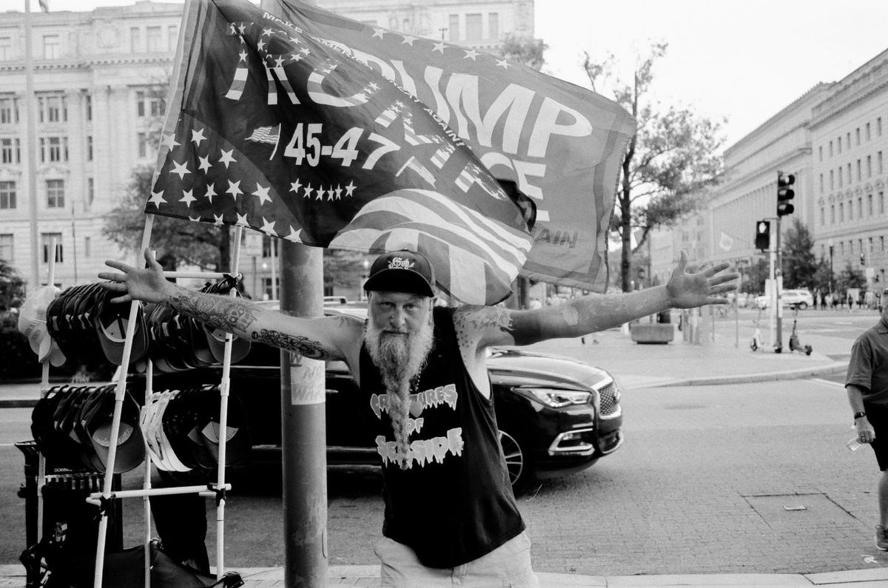
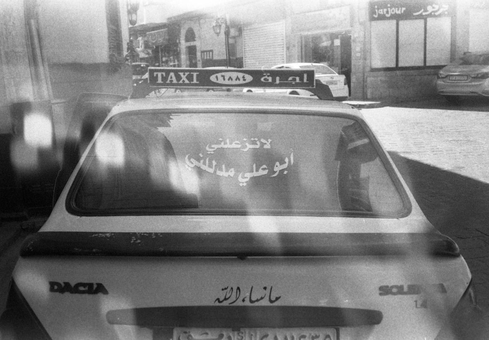
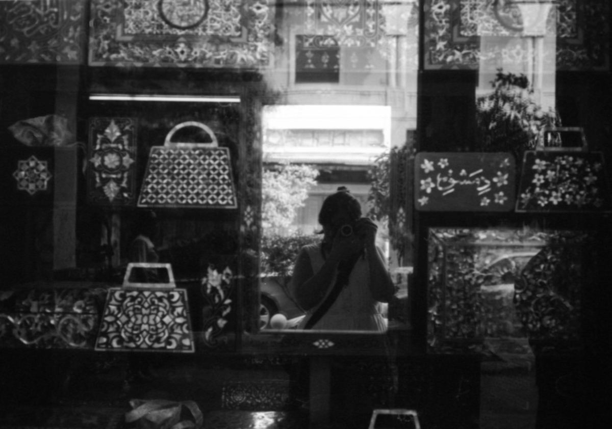
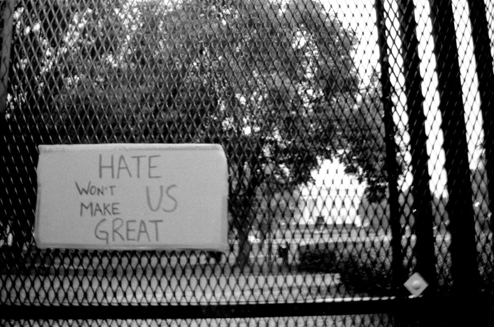
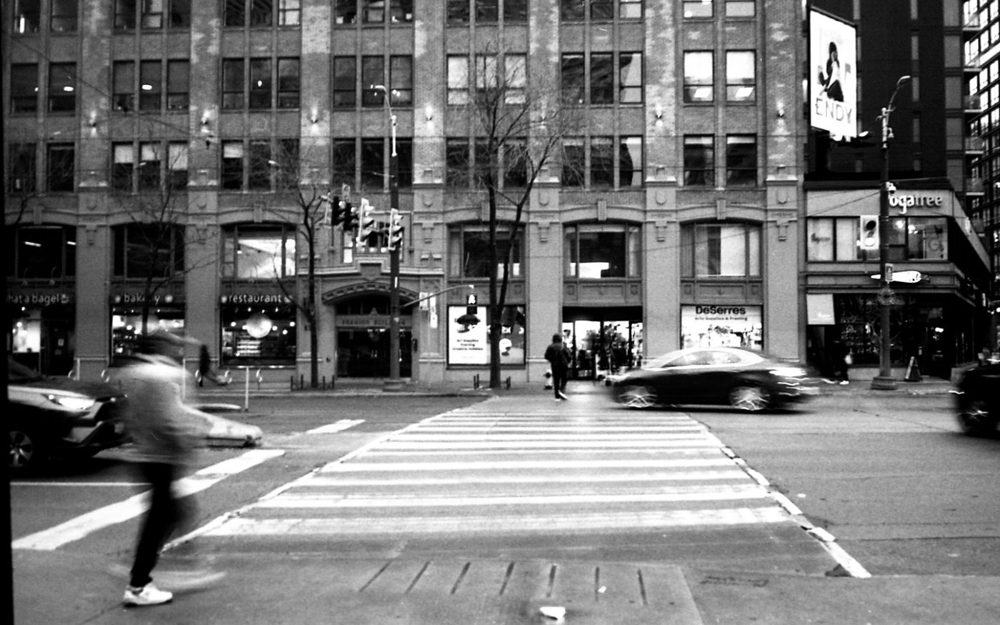
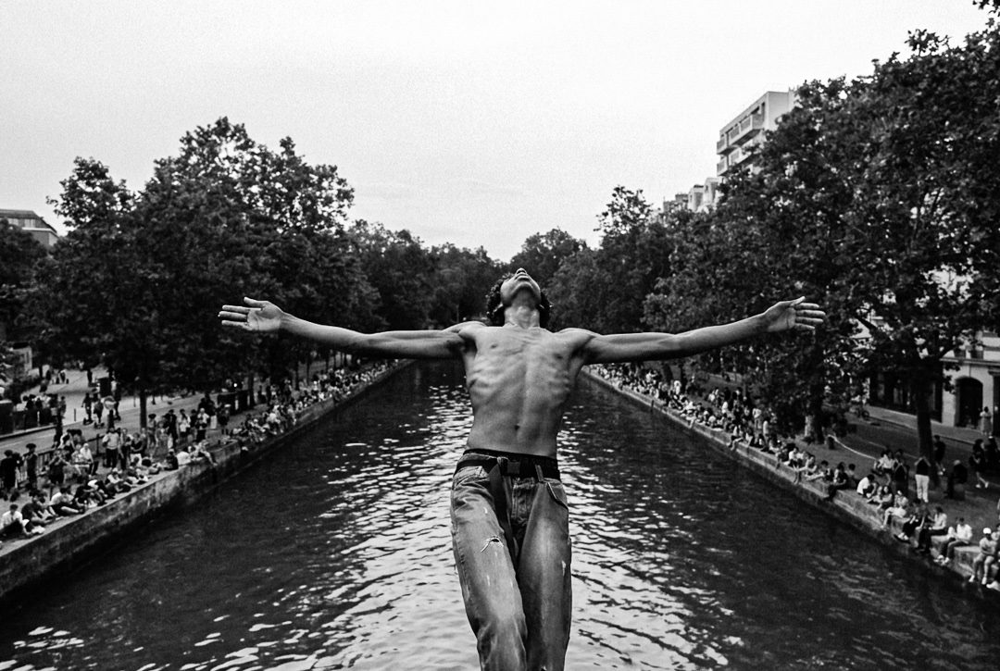
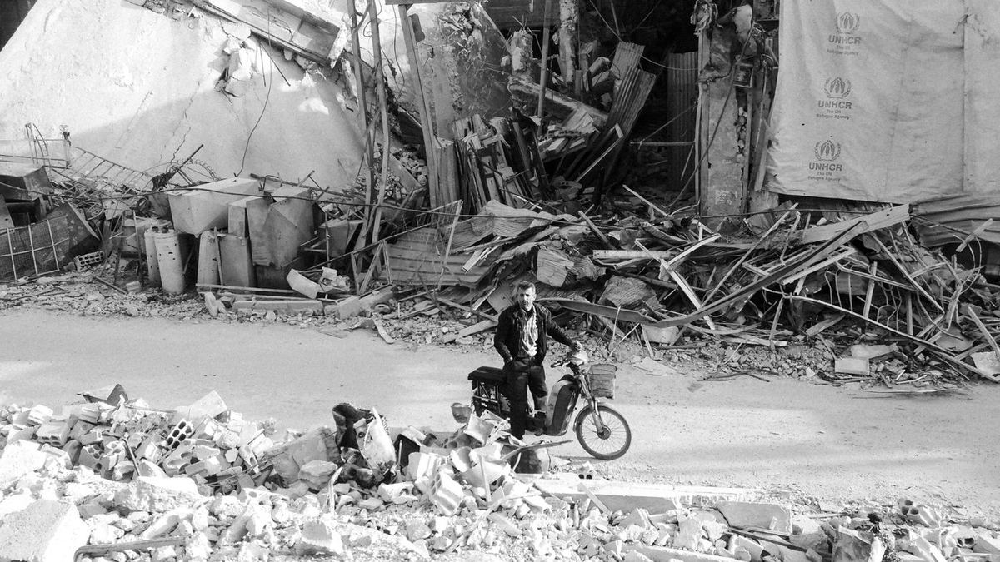

First Edition · Open Callالعدد الأول · دعوة مفتوحة للمشاركة
From the Streetsمن الشارع

Photographs: Luma Darwishالصور: لُمى درويش
01٠١About the themeعن الموضوع
The street is an open space where everyday life unfolds. It is where faces, stories and fleeting encounters intersect, and where our relationships with places and one another take shape.الشارع مساحة مفتوحة للحياة اليومية، مكان تتقاطع فيه الوجوه والقصص واللقطات العابرة، وتشكّل فيه علاقتنا بالمكان وبالآخرين.
For the first edition of Diaries, we invite photographers to explore the street through their lenses and share photographs that capture what draws their attention: faces, movement, light, shadows, details, unexpected moments and everyday scenes.في العدد الأول من يوميات، ندعو المصوّرين إلى استكشاف الشارع من خلال عدساتهم، ومشاركة صور تلتقط ما يلتفتون إليه: الوجوه، الحركة، الضوء، الظلال، التفاصيل، اللقطات غير المتوقعة والمشاهد اليومية.
We are not looking for a fixed definition of street photography. We welcome different experiences and perspectives, and photographs that reflect how each photographer sees the world around them.لا نبحث عن تعريف محدد للتصوير الشارع، بل نرحّب بتجارب ورؤى مختلفة، وكل صورة تعكس طريقة صاحبها في رؤية العالم من حوله.




02٠٢Guest curatorالقيّم الفني للصور
Baraa Salihبراء صالح
Independent photographerمصوّر مستقل
An independent photographer working across documentary photography and personal visual storytelling. His practice has taken him between Syria, Turkey and France, and he approaches street photography as a way to rediscover places and people's relationships with them.مصوّر مستقل يعمل بين التصوير الوثائقي والسرد البصري الشخصي. تنوّعت تجربته بين سوريا وتركيا وفرنسا، ويمنحه تصوير الشارع بوصفه مساحة لإعادة اكتشاف المكان وعلاقة الناس به.


Photographs: Baraa Salihالصور: براء صالح
03٠٣Open callالدعوة المفتوحة
Submission detailsتفاصيل المشاركة
01٠١Open to photographers of all experience levels.الدعوة مفتوحة للمصوّرين من جميع مستويات الخبرة.
02٠٢Digital and analogue photography are welcome.التصوير الرقمي والأنالوغ مرحّب بهما.
03٠٣Submit between one and three photographs.يمكن تقديم صورة واحدة إلى ثلاث صور.
04٠٤Submission deadline: December 10, 2026.آخر موعد للتقديم: 10 ديسمبر 2026.
05٠٥Approximately 10 photographers will be selected for this edition.سيتم اختيار نحو 10 مصوّرين للمشاركة في هذا العدد.
How to participateكيف تشارك؟
Please read the submission guidelines below, then submit your information and photographs through the application form.اقرأ إرشادات المشاركة أدناه، ثم أرسل معلوماتك وصورك من خلال استمارة التقديم.
Submission guidelinesإرشادات المشاركة
Photographsالصور
Submit between one and three photographs.يمكن تقديم صورة واحدة إلى ثلاث صور.
All photographs must be your own work, and you must hold the rights to them.يجب أن تكون الصور من تصويرك وأن تملك حقوق استخدامها.
Both digital and analogue photography are welcome.نرحّب بالتصوير الرقمي والأنالوغ والمعالجة الفوتوغرافية التي تقدّم رؤيتك.
No watermarks or added logos.لا تُقبَل الصور التي تتضمن علامات مائية أو شعارات مضافة.
Image specificationsمواصفات الصور
Format: JPEG.الصيغة: JPEG.
Colour profile: sRGB.مساحة الألوان: sRGB.
Maximum file size: 2 MB per photograph.ألا يتجاوز حجم الصورة 2 ميغابايت.
Maximum dimensions: 2,000 pixels on the longest edge.ألا يتجاوز الضلع الأطول 2000 بكسل.
Name files using your name and image number (e.g. Name_01.jpg).تسمية الملفات باسم المصوّر ورقم الصورة (مثال: Name_01.jpg).
Text and informationالنصوص والمعلومات
Include a title for each photograph, if applicable.أرفق عنواناً لكل صورة إن وجد.
You may include a short description or reflection about the image or the idea behind it. This is optional.يمكنك إضافة وصف قصير أو نص يشرح سياق الصورة أو الفكرة ورائها، هذا اختياري.
Include a short biography introducing yourself and your photographic practice.أضف نبذة قصيرة عنك وعن تجربتك الفوتوغرافية.
Image rights and publicationحقوق الصور والنشر
Photographers retain full ownership and copyright of their work.يحتفظ المصوّر بكامل حقوق ملكية صوره.
By submitting, you grant The Image Club permission to review your photographs for selection purposes only.يمنح تقديم الصور نادي يوميات الإذن بنشرها لأغراض الاختيار فقط.
If selected, you will be asked to confirm permission for publication in this edition of Diaries, with photographer credit.في حال اختيار الصور، سيُطلب تأكيد موافقة المصوّر على نشرها ضمن هذا العدد من يوميات، مع ذكر اسمه.
Any additional use beyond this edition requires separate permission.أي استخدام إضافي لصور خارج نطاق هذا العدد يتطلب موافقة منفصلة من المصوّر.
Please noteملاحظات
Submission does not guarantee selection.تقديم الصور لا يضمن اختيارها.
Selected photographers will be contacted after the submission period closes.سيتم التواصل مع المصوّرين المختارين بعد انتهاء فترة التقديم.
Unselected photographs will not be published or used for other purposes.لن تُنشر الصور غير المختارة أو تُستخدم لأغراض أخرى.
Ready to take part?جاهز للمشاركة؟
Submission deadline: December 10, 2026آخر موعد للتقديم: 10 ديسمبر 2026
Guest curator · Edition 01القيّم الفني للصور · العدد الأول
Baraa Salihبراء صالح
An independent photographer working across documentary photography and personal visual storytelling.مصوّر مستقل يعمل بين التصوير الوثائقي والسرد البصري الشخصي.
Moving between Syria, Turkey and France, my practice has ranged from following the news to observing everyday life. Street photography has opened up a new space for my work — not simply as a means of expression, but as a way to rediscover places, people's relationships with them, and the relationship between the individual and the collective.بين سوريا وتركيا وفرنسا، تنوّعت تجربتي بين متابعة الخبر ومراقبة الحياة اليومية. ومنحني تصوير الشارع مساحة جديدة للممارسة، ليس كوسيلة للتعبير فقط، بل كطريقة لإعادة اكتشاف المكان وعلاقة الناس به، وعلاقة الفرد بالجماعة.
To me, the street is an open stage without a director, a place from which to observe the world and see it in different ways.فالشارع، في نظري، مسرح مفتوح بلا مخرج، يمكن من خلاله ملاحظة العالم ورؤيته بطرق مختلفة.